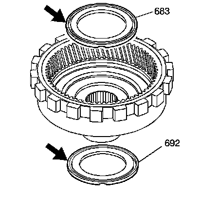
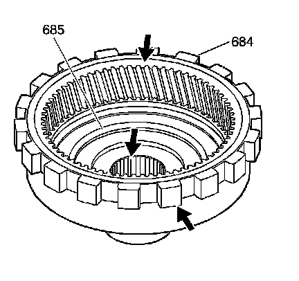
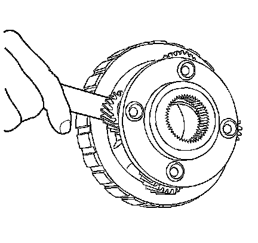
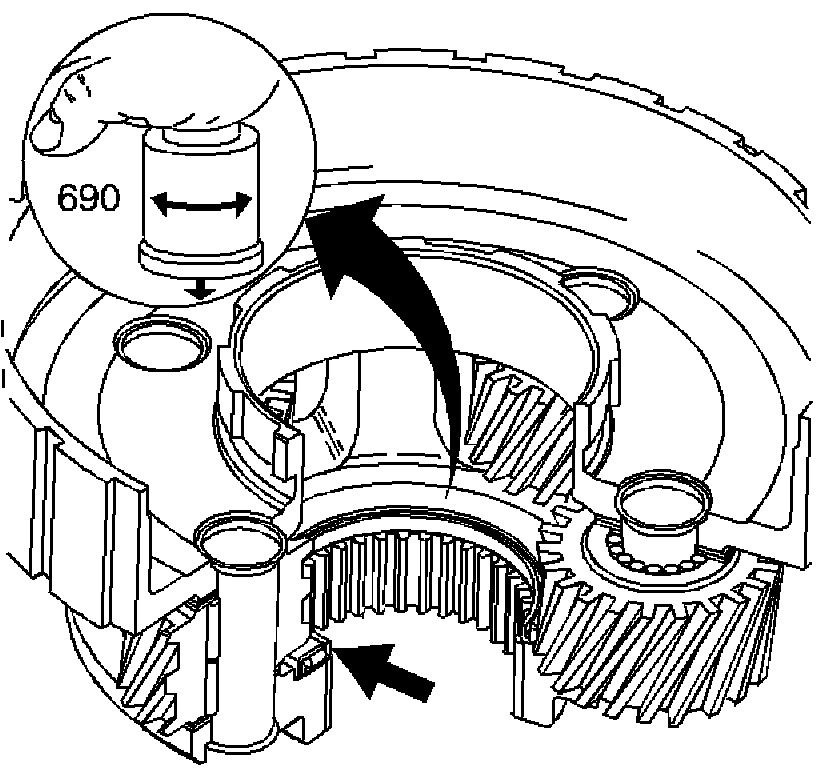

Reaction Gear and Carrier Inspection
Reaction Gear and Carrier Inspection

1. Inspect the reaction carrier/support thrust bearing assembly (683) for wear or damage.
2. Inspect the reaction gear support to case bearing (692) for wear or damage.

3. Inspect the internal reaction gear (684) and the internal reaction gear support (685) for proper assembly, stripped splines, cracks, teeth, and lug damage.

Important: Inspect all pinions, either 4 or 5 depending on model.
4. Check the reaction carrier pinion end play. The end play must not exceed 0.61 mm (0.024 in).
Inspect the reaction carrier for the following conditions:
^ Pinion gear damage
^ Proper pinion staking
^ Excessive pinion washer wear
^ Keystoned pinion gears
5. Ensure that the pinions turn freely.

6. Inspect the reaction carrier captive thrust bearing for wear or damage.
1. Without touching the pinion gears, place a bushing or an output shaft sleeve (690) onto the bearing race, and turn it with the palm of your hand.
2. Any imperfections will be felt through the bushing.